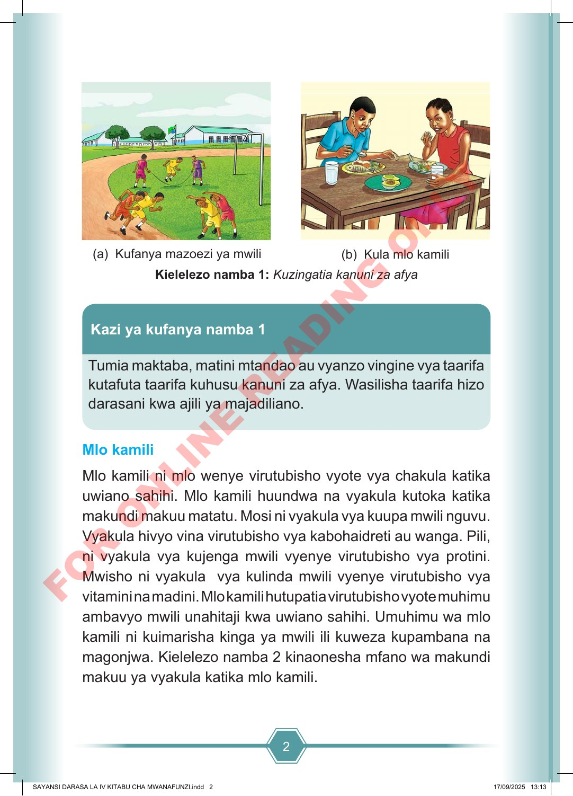

2 (a) Kufanya mazoezi ya mwili (b) Kula mlo kamili Kielelezo namba 1: Kuzingatia kanuni za afya Tumia maktaba, matini mtandao au vyanzo vingine vya taarifa kutafuta taarifa kuhusu kanuni za afya. Wasilisha taarifa hizo darasani kwa ajili ya majadiliano. Kazi ya kufanya namba 1 Mlo kamili Mlo kamili ni mlo wenye virutubisho vyote vya chakula katika uwiano sahihi. Mlo kamili huundwa na vyakula kutoka katika makundi makuu matatu. Mosi ni vyakula vya kuupa mwili nguvu. Vyakula hivyo vina virutubisho vya kabohaidreti au wanga. Pili, ni vyakula vya kujenga mwili vyenye virutubisho vya protini. Mwisho ni vyakula vya kulinda mwili vyenye virutubisho vya vitamini na madini. Mlo kamili hutupatia virutubisho vyote muhimu ambavyo mwili unahitaji kwa uwiano sahihi. Umuhimu wa mlo kamili ni kuimarisha kinga ya mwili ili kuweza kupambana na magonjwa. Kielelezo namba 2 kinaonesha mfano wa makundi makuu ya vyakula katika mlo kamili. SAYANSI DARASA LA IV KITABU CHA MWANAFUNZI.indd 2 SAYANSI DARASA LA IV KITABU CHA MWANAFUNZI.indd 2 17/09/2025 13:13 17/09/2025 13:13 F O R O N L I N E R E A D I N G O N L Y